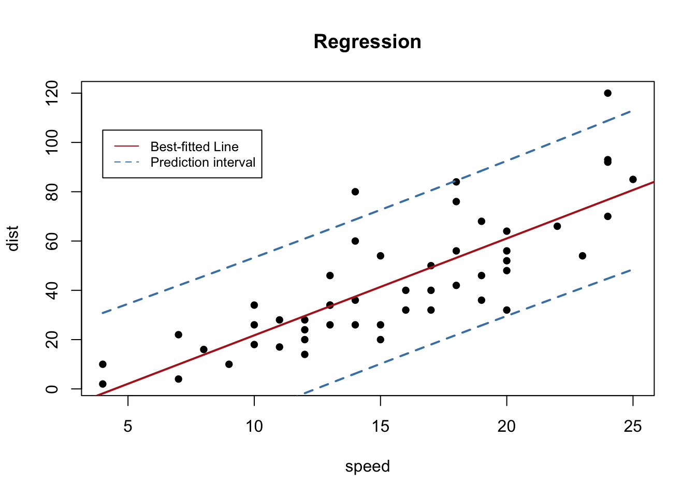

5 Machine learning and classification
You have 2000 photos of zooplankton, or 500 recordings of bat vocalizations, or 20 000 pixels from a satellite image. How do you ensure that each one is placed in the right category of species or type? There are many methods that can be employed for classification tasks like this ranging from logistic regression to random forest techniques. While some of these methods are classic multivariate methods, others, like random forest classifiers, are machine learning tasks. Machine learning is an application of artificial intelligence, which allows algorithms to become more accurate at predicting outcomes without being explicitly programmed to do so. When we fit a regression in the ordinary way, we specify the model ahead of time and determine if the model has good or bad fit. We might then modify our model to reduce prediction error. In machine learning, the algorithm itself completes the tasks of model specification, evaluation and improvement. Spooky!
In this module we will continue our exploration of techniques for multivariate data (see Module 3 on Clustering and ordination), but will pay more attention to machine learning approaches. Classification is the task of assigning data objects, such as sites, species or images to predetermined classes. Determining what class of data object you have is a question that usually turns on multiple predictors. For example, to classify leaf images to different species, predictors such as size, shape and colour may be used. If you have satellite data, you may need to classify the different pixels of the image as agricultural, forest, or urban. So for classification tasks our response variable, y, is qualitative or categorical (e.g., gender, species, land classification) while our predictors can be either quantitative or qualitative.
The main thing to remember about machine learning is that these methods develop their own models for prediction. For example, in image recognition, they might learn to identify images that contain different species of zooplankton by analyzing example images that have been previously labelled by the researcher. However, generally there is no information provided about what rules the researcher used to identify the images (e.g., size, shape, etc). Instead the machine learning tool develops its own framework for identification, which is one reason why the solution from the machine learning routine can seem like a black box. Once trained, the algorithm can identify the species of unlabeled images, and may or may not be using the same kind of identifiers that a researcher would use to manually process the images.
5.1 Logistic regression
One of the simplest classification methods, and one that does not involve machine learning, is logistic regression. Let’s take a common example. A non-native species has been introduced to a region, and we would like to know what percentage of the region would be suitable habitat, in order to get an idea of risks of impact on the native ecosystem. We think that average temperature controls habitat suitability, and we have presence/absence data for the species across a range of different sites. Could we use simple regression to answer the question of whether a given area is suitable habitat? If we indicate absence as 0, and presence as 1, we can regress species occurrence again average annual temperatures at each location.
# create some synthetic data with random variation
x = rnorm(200, 12, 2.5)
y = x
y = ifelse(x > 12, 1, 0)
e = rnorm(200, 0, 0.1)
y = ifelse(y + e >= 1, 1, 0)
# plot the data and the regression line
plot(y ~ x, pch = 16, ylim = c(-0.1, 1.1), xlim = c(0, 20), col = rgb(0.1,
0.3, 0.4, 0.6), ylab = "Species occurrence", xlab = "Mean annual temperature (°C)",
cex.lab = 1.5, las = 1)
lreg = lm(y ~ x)
abline(lreg, col = 2, lwd = 2)
Figure 5.1: Species presence/absence and mean annual temperature with linear regression
As we can see in Fig. 5.1, the linear regression does not make a lot of sense for a response variable that is restricted to the values of 0 and 1. The regression line \(\beta_0+\beta_1x\) can take on any value between negative and positive infinity, but we don’t know how to interpret values greater than one or less than zero. The regression line almost always predicts wrong value for y in classification problems.
Instead of trying to predict y, we can try to predict p(y = 1), i.e., the probability that the species will be found in the area. For invasive species, this probability is often interpreted as habitat suitability for the species. We need a function that gives outputs between 0 and 1: logistic regression is one solution. In this model, probability of y=1 for a given value of x is given as: \[p(y=1|x)=\frac{1}{1+e^{-(\beta_0+\beta_1x)}}.\] Rearranging, we have: \[\frac{p(y=1|x)}{1-p(y=1|x)}=e^{\beta_0+\beta_1x}.\] Taking the natural logarithm, we can see that the logistic regression is linear in x: \[\log\left({\frac{p(y=1|x)}{1-p(y=1|x)}}\right )=\beta_0+\beta_1x,\] where the lefthand side is called the log-odds or logit. The logistic function will always produce an S-shaped curve bounded at 0 and 1, so regardless of the value of x, we will obtain a sensible prediction.
Let’s apply this model to our non-native species data using the generalized linear model or glm() function. We use the glm() function to perform logistic regression by passing in the family=“binomial” argument. But if we use glm() to fit a model without passing in the family argument, then it performs linear regression, just like the linear model or lm() function. We will fit the model and then get the predictions.
glm.fit.sp = glm(y ~ x, family = binomial)
glm.probs <- predict(glm.fit.sp, type = "response")# plot the data
plot(y ~ x, pch = 16, ylim = c(-0.1, 1.1), col = rgb(0.1, 0.3,
0.4, 0.6), ylab = "Species occurrence", xlab = "Mean annual temperature (°C)",
cex.lab = 1.5, las = 1)
# save the regression coefficients
logcoefs = round(as.data.frame(summary(glm.fit.sp)$coefficients),
2)
# plot the fitted curve using the saved coefficients
curve(exp(logcoefs[1, 1] + logcoefs[2, 1] * x)/(1 + exp(logcoefs[1,
1] + logcoefs[2, 1] * x)), add = TRUE, col = 2, lwd = 2)Figure 5.2: Species presence/absence and mean annual temperature with logistic regression
5.1.1 Interpreting the logistic regression
Let’s take a closer look at the output for our logistic regression (Fig. 5.2). First off, we need to know if the intercept, \(\beta_0\), and slope, \(\beta_1\), are significantly different from zero. A z distribution is used for this test, and we find that both the intercept and slope are significantly different from zero (Table 5.1). Our p-values are very, very small, so our model is doing better than random chance.
| Estimate | Std. Error | z value | Pr(>|z|) | |
|---|---|---|---|---|
| (Intercept) | -8.87 | 1.4 | -6.4 | 0 |
| x | 0.62 | 0.1 | 6.0 | 0 |
The estimated intercept is typically not of interest. Its main purpose is to adjust the average fitted probability to the proportion of ones in the data. You may be confused by the slope value. Interpreting what \(\beta_1\) means is not very easy with logistic regression, simply because we are predicting p(y=1) and not y, and that the function is sigmoid. If \(\beta_1\) = 0, this means there is no relationship between p(y=1) and x. If \(\beta_1\) > 0, this means that when y gets larger so does the probability that y = 1. If \(\beta_1\) < 0, this means that when x gets larger, the probability that y = 1 gets smaller. Our \(\beta_1\) is positive, so we are sure that as temperature increases, the probability of habitat suitability will increase as well. For example, suppose a region has an average annual temperature of 12°C. We know that the probability that the habitat is suitable (p(y=1)) for our invasive species is: \[p(y=1|x)=\frac{1}{1+e^{-(\beta_0+\beta_1x)}}.\] Substituting in our fitted values from the logistic regression, we have: \[p(y)=\frac{1}{1+e^{-(-8.87 + 0.62)(12)}}=0.19.\] The value changes with temperature, so for an average annual temperature of 16°C that probability is 0.74, and so on.
Exercise 1 Try this for yourself, see if you can use similar code in order to estimate the probability that a site with an average annual temperature of 18°C will be occupied by the invasive species.
5.1.2 The confusion matrix
Of course, the data used to fit this relationship is zeros (absence) and ones (present). In order to test model fit we need to decide on a threshold value for the probability prediction. For example, an easy one is 50%. If the model predicts a probability of greater than 0.5, then we will score that as presence (y=1), while if the predicted value is equal to or less than 0.5, we will score as an absence (y=0). Now we have model predictions in terms of predicted absences and presences (i.e., zeros and ones), and can compare directly to our data.
When binary classifications are made by converting the probabilities using a threshold, there can be four cases for a certain observation:
The response actually negative, the model predicts it to be negative. This is known as true negative (TN). In our case, the invasive species is not present at the location, and the model predicts that it should not be present.
The response actually negative, but the model predicts it to be positive (i.e., false positive, FP).
The response actually positive, and the model predicts it to be positive (i.e., true positive TP).
The response actually positive, but the model predicts it to be negative (i.e., false negative FN).
We can summarize this information in a confusion matrix which records the number of times the model correctly predicted the data, and the number of times the model makes incorrect predictions.
# determine model occurrence predictions based on threshold
# value
logocc <- ifelse(glm.probs > 0.5, 1, 0)
# Calculate a confusion matrix
ctab = table(logocc, y)
dimnames(ctab) <- list(Actual = c("absence(0)", "presence(1)"),
Predicted = c("absence(0)", "presence(1)"))
ctab Predicted
Actual absence(0) presence(1)
absence(0) 128 33
presence(1) 17 22Elements on the diagonal from left to right are correct classifications, while off-diagonal elements are miss-classifications (i.e., predictions where the predict code of 0 or 1 does not match the actual code of 0 or 1). So in this case, we have 128 true negatives (TN), 33 false positives (FP), 17 false negatives (FN), and 22 true positives (TP). We can quantify these errors in a number of ways. The misclassification rate, or error rate is the most common metric used to quantify the performance of a binary classifier. This is the probability that the classifier makes a wrong prediction (given as \(\frac{FN+FP}{TN+FN+TP+FP}\)). Overall 50 observations have been misclassified, so we have a total error rate of 25%.
However, 44% of the presence data has been misclassified, compared to 20% of the absence data. So with respect to the predicting the potential presence of an invasive species, we’re not doing much better than random chance. The terms sensitivity and specificity characterize the performance of classifier for these specific types of errors. In this case, the sensitivity is the percentage of occupancy locations that are correctly identified (true positives), which is 56% or one minus the misclassification rate of positives (or 1-0.44), also calculated as TP/(TP+FN). Specificity is the percentage of non-occupancy sites that are correctly identified (true negatives). We can calculate this as one minus the misclassification of true negatives from the values above (1 − 0.2) = 0.8, or from the formula TN/(TN+FP).
We can of course, change the decision threshold to see if we can get a better outcome. Let’s try 0.65 instead of 0.5.
Predicted
Actual 0 1
0 136 44
1 9 11This higher threshold gives us an error rate of 26%, sensitivity of 55% and specificity of 76%, so not much improvement.
Exercise 2 Can you calculate the sensitivity and specificity for a threshold classification of 0.45?
5.1.3 ROC and AUC
We can also examine the performance of the model across a range of thresholds. We often see this approach in species distribution modelling, where sensitivity (% of true positives) is plotted against 1-specificity (% of false positives) for threshold values from 0 to 1. This graph is called the Receiver Operator Curve (ROC), and the Area Under that Curve (AUC) is calculated. This is a fairly standard evaluation for binary classifiers, and there are a number of R packages that will complete this analysis for you. If the model is not performing better than random chance, the expected ROC curve is simply the y=x line. Where the model can perfectly separate the two classes, the ROC curve consists of a vertical line (x=0) and a horizontal line (y=1). For real and simulated data, usually the ROC stays in between these two extreme scenarios. Let’s try with our simulated data.
library(ROCit)
ROCit_obj <- rocit(score = glm.fit.sp$fitted.values, class = y)
pauc = plot(ROCit_obj)Figure 5.3: Receiver Operator Curve (ROC) for the logistic regression binary classifier of species occurence data
summary(ROCit_obj)
Method used: empirical
Number of positive(s): 55
Number of negative(s): 145
Area under curve: 0.8361 Overall, we have an area under the ROC curve (Fig.5.3) of 0.84, which is not bad, given the maximum value is one. The optimal threshold value is given by the Youden index as 0.66. The Youden index maximizes the difference between sensitivity and 1-specificity and is defined as sensitivity+specificity-1. Let’s try this threshold directly:
Predicted
Actual 0 1
0 139 46
1 6 9We can see that this error threshold, as summarized above, gives an error rate of 26%, sensitivity of 60% and specificity of 75%. Overall, an okay, but not fantastic model, at the best performing threshold.
5.2 Cross-validation
So far, we’ve evaluated model performance with the data that we used to train the model, but the point of classification tools is to be able to use them on data where we don’t already know the answer. In that sense, we are uninterested in in model performance on training data, what we really want to do is to test the model on data that was not used in model fitting. For example, we don’t really care how well our method predicts habitat suitability where the invasive species is already located! What we need to know is how well it predicts the habitat suitability of locations where the species has not yet invaded. The model performance on this testing data will give us a better idea of the errors we might expect when we apply our classifier to novel data. While we might naively expect that model performance on the training data will be the same on the testing data, in practice the errors are usually larger, sometimes much larger. In more complex models, this error rate is often the result of overfitting the training data, so that pattern which is just noise is included in the model fit. Consequently, the model is not well fit to data with different sources of noise.
Of course, in biology data is almost always limited! While you might have an extra independent dataset kicking around waiting to be used for model testing, if you don’t, you can divide your single dataset into training and testing sets. One easy way to do this is just using random selection. Let’s try on our data. We’ll divide a dataframe with our data into two parts using the sample() function, fit our logistic model on the training data, and evaluate its performance on the testing data.
# simulate some temperature and occupancy data using a
# random number generator
xs = rnorm(200, 12, 2.5)
ys = ifelse(xs > 12, 1, 0)
es = rnorm(200, 0, 0.1)
# adding some randomness to simulated occupancy data
ys = ifelse(ys + es >= 1, 1, 0)
# create a dataframe with our temperature and occupancy
# data
ivsp = data.frame(temp = xs, occ = ys)
# randomly sample 75% of the data (by generating random
# numbers based on the number of rows)
samp = sample(nrow(ivsp), nrow(ivsp) * 0.75, replace = FALSE)
# divide into training and testing sets
train <- ivsp[samp, ]
test <- ivsp[-samp, ]
# fit the logistic model on the training data
log.fit.inv = glm(occ ~ temp, family = binomial, data = train)
# test the logistic model on the testing data
log.predict <- predict(log.fit.inv, newdata = test, type = "response")
# determine predicted occupancy based on threshold value of
# 0.5
pred.occ <- ifelse(log.predict > 0.5, 1, 0)
# Calculate a confusion matrix
ctab = table(pred.occ, test$occ)
dimnames(ctab) <- list(Actual = c(0, 1), Predicted = c(0, 1))
ctab Predicted
Actual 0 1
0 40 7
1 2 1# Calculate error rate, sensitivity and specificity
err = round((ctab[1, 2] + ctab[2, 1])/sum(ctab), 2)
sens = round(ctab[2, 2]/(ctab[2, 1] + ctab[2, 2]), 2)
spec = round(1 - ctab[1, 2]/(ctab[1, 1] + ctab[1, 2]), 2)
print(paste0("error rate=", err, "; sensitivity=", sens, "; specificity=",
spec))[1] "error rate=0.18; sensitivity=0.33; specificity=0.85"You may want to verify for yourself that the sample function randomly selects rows out of a dataframe
5.2.1 k-Fold Cross-Validation
You’ll notice that dividing the data up into testing and training sets reduces the number of observations available to test the model. We can of course use different percentages to divide up our one dataset into training and testing sets, but models tend to have poorer performance when trained on fewer observations. On the other hand, the small testing dataset may tend to overestimate the test error rate for the model fit, as compared to error rates obtained on a larger amount of data.
And what about the effects of that random sampling? If we repeat the process of randomly splitting the sample set into two parts, we will get a somewhat different estimate for the error rate on testing data each time, because different observations will be randomly included in the dataset each time. Sometimes the differences between error rates on different testing datasets can be rather large. For example, by random selection an observation which is a huge outlier could be included in one small testing dataset, but not in another, resulting is very different error rates. To guard against undue influence of single observations in our small test dataset we could do the routine of randomly sampling to obtain testing and training sets several times, and look at the average of our testing data performance.
One way of implementing this type of resampling scheme is k-fold cross-validation. With this method, we randomly divide the set of observations into k groups, or folds, of approximately equal size. The first fold is treated as a testing set, and the model is fit on the remaining k − 1 folds. This procedure is repeated k times, and each time, a different group of observations is treated as the testing set. See the pseudocode below for and idea of how to do this. We then average the error rates from each test fold. We can even repeat the entire procedure several times in repeated k-fold cross-validation.
# example code for iterated cross-validation set up
reps = 10
nfolds = 5
for (j in 1:reps) {
# generate array containing fold-number for each sample
# (row)
foldsset <- rep_len(1:nfolds, nrow(data))
# create subsetes of data based on the random fold
# assignment
folds <- sample(foldsset, nrow(data))
# actual cross validation: we allow each fold to act as
# the test data in turn
for (k in 1:nfolds) {
# split of the data
fold <- which(folds == k)
data.train <- data[-fold, ]
data.test <- data[fold, ]
# train and test your model with data.train and
# data.test
}
} # repeat for the desired number of interactions While we can program the k-fold cross-validation ourselves, there is a nice package in R, caret, that is a good wrapper for these kinds of tasks, and which is really great for machine learning stuff. We can use the caret package to run or k-fold cross validation and to generate our confusion matrix and other statistical info about our classifier.
Going back to the species occurrence data, let’s use the caret package to run a k-fold cross-validation, with 5 folds, rather than simply dividing the data into training and testing sets.
library(caret)
# cross-validation with 5 folds
train_control <- trainControl(method = "cv", number = 5)
# fit the logistic regression
hab <- train(as.factor(occ) ~ temp, data = train, trControl = train_control,
method = "glm", family = "binomial")
confusionMatrix(hab)Cross-Validated (5 fold) Confusion Matrix
(entries are percentual average cell counts across resamples)
Reference
Prediction 0 1
0 71.3 18.0
1 6.7 4.0
Accuracy (average) : 0.7533The caret package neatly does our data resampling, fits the model, gets an average model performance across the 5 testing sets, AND calculates the confusion matrix for us. Not bad! The first confusion matrix reports classification error averaged all the folds (assuming a 0.5 threshold). We can also see the regression output for the final model and its predictions.
We can generate the confusion matrix and statistics for just the final model, for any given threshold.
summary(hab$finalModel)
Call:
NULL
Deviance Residuals:
Min 1Q Median 3Q Max
-1.859 -0.656 -0.452 -0.198 1.823
Coefficients:
Estimate Std. Error z value Pr(>|z|)
(Intercept) -6.5670 1.3031 -5.04 4.7e-07 ***
temp 0.4205 0.0978 4.30 1.7e-05 ***
---
Signif. codes: 0 '***' 0.001 '**' 0.01 '*' 0.05 '.' 0.1 ' ' 1
(Dispersion parameter for binomial family taken to be 1)
Null deviance: 158.07 on 149 degrees of freedom
Residual deviance: 134.21 on 148 degrees of freedom
AIC: 138.2
Number of Fisher Scoring iterations: 5habprob <- hab$finalModel$fitted.values
# t is the threshold for which the confusion matrix shall
# be computed
habclass <- function(t) ifelse(habprob > t, 1, 0)
# test with confusion matrix
confusionMatrix(as.factor(habclass(0.5)), as.factor((train$occ)))Confusion Matrix and Statistics
Reference
Prediction 0 1
0 109 28
1 8 5
Accuracy : 0.76
95% CI : (0.684, 0.826)
No Information Rate : 0.78
P-Value [Acc > NIR] : 0.75785
Kappa : 0.106
Mcnemar's Test P-Value : 0.00154
Sensitivity : 0.932
Specificity : 0.152
Pos Pred Value : 0.796
Neg Pred Value : 0.385
Prevalence : 0.780
Detection Rate : 0.727
Detection Prevalence : 0.913
Balanced Accuracy : 0.542
'Positive' Class : 0
Perhaps the most informative of these stats is the No Information Rate which tests whether our classifier does better than random assignment. We see that our accuracy rate is significantly greater than this no information rate, and so, this should be an okay classifier. Also, the Balanced Accuracy Statistic gives an accuracy value that weights both majority and minority classes evenly, and is useful if you have unbalanced class membership in your data. In our case, the accuracy and balanced accuracy rates are a bit different, so we may want to investigate further (see Unbalanced classes).
5.2.2 Multiple logistic regression
If we have more than one predictor, we can fit a multiple logistic just like a regular regression, as: \[p(y)=\frac{1}{1+e^{-(\beta_0+\beta_1x_1+...+\beta_nx_n)}}\] and the \(x_n\) predictors can be both qualitative or quantitative. For example, we could add a land classification to our invasive species habitat suitability model so that we have both temperature (\(x_1\)) and urban and rural (\(x_2\)) land types.
glm.fit.sp2 = glm(y ~ x + as.factor(x2), family = binomial)In this case, our model now has two responses, one for land categorized as urban, and one for land categorized as rural (Fig. 5.4).
| Estimate | Std. Error | z value | Pr(>|z|) | |
|---|---|---|---|---|
| (Intercept) | -9.72 | 1.52 | -6.4 | 0 |
| x | 0.65 | 0.11 | 5.9 | 0 |
| as.factor(x2)urban | 1.40 | 0.42 | 3.3 | 0 |
Both predictors are significantly different from zero (Table 5.2), and the values tell is that if the land is categorized as urban, we must increase our probability estimate upwards from that of a rural area as:
\[p(y)=\frac{1}{1+e^{-(-9.72 + 0.65x_1+1.4 (1))}}\]
Figure 5.4: Species occurrence vs temperature and land classification as urban or rural
Of course, we are still using logistic regression as a binary classifier. Logistic regression can be extended to multiple classification problems in different ways, but in practice these methods tend not to be used all that often. Instead other techniques such as linear discriminant analysis and random forest tend to be used for multiple-class classification problems (see below).
Exercise 3: Logistic regression as a binary classifier
Try to use logistic regression on your own, with a pre-existing dataset in the MASS package. Start by installing the MASS package, load the library and load the data. The dataset we will use has been previously divided into training (Pima.tr) and testing sets (Pima.te), so that you don’t have to employ k-fold cross validation. The dataset describes several risk factors for diabetes. Type help(Pima.tr) or ?Pima.tr to get a description. You’ll notice that the “type” variable is our classifier and determines whether the patient has diabetes or not.
Next construct a multiple logistic regression to use as a classifier. Examine your output to determine if the regression is significant. We can use “~.” in the formula argument to mean that we use all the remaining variables in the dataset as predictors.
Next, use some testing data to test your classifier. The Prima.te dataset to be used as testing data has already been created for you in the MASS package. Use the predict function to get the predicted probabilities, and a threshold value to get classifications. Then construct a confusion matrix to determine how well your predictor did.
5.2.3 Examples of logistic regression used for classification
While there is an emphasis in the literature on more complex classification methods, we should point out that we have spent a significant amount of time on this relatively simple method not just for pedagogical reasons. Logistic regression is sometimes just as effective, or even more effective, at classification problems, and further, has the merit of being easy to understand.
Cuddington, K., Sobek-Swant, S., Drake, J., Lee, W., & Brook, M. (2021). Risks of giant hogweed (Heracleum mantegazzianum) range increase in North America. Biological Invasions. https://doi.org/10.1007/s10530-021-02645-x
Tuda, M., & Luna-Maldonado, A. I. (2020). Image-based insect species and gender classification by trained supervised machine learning algorithms. Ecological Informatics, 60, 101135. https://doi.org/10.1016/j.ecoinf.2020.101135
5.3 Linear Discriminant Analysis (LDA)
While there are ways to modify logistic regression to classify more that two types of objects, in practice there are better methods such as linear discriminant analysis (LDA) or various machine learning techniques (described below). LDA can be used to classify data based on categorical response variables. One implementation of LDA tries to find a linear combination of the predictors that gives maximum separation between the centers of the data while at the same time minimizing the variation within each group of data. This approach is implemented in many R packages, as in the lda() function of the MASS package, for example.
You might wonder how finding a linear combination of predictors differs from linear regression, logistic regression, or principal components analysis (PCA). LDA is popular when we have more than two response classes (polytomous responses), which logistic regression can only handle with some modification. In addition, when classes are well-separated, parameter estimates for logistic regression are surprisingly unstable, but LDA does not suffer from this problem. Finally, unlike linear regression, LDA chooses parameters to maximize distance between means of different categories.
This approach of using a linear combination of predictors to predict similarity also seems similar to PCA, although of course PCA is an unsupervised learning technique (that is we don’t don’t have classification which we provide), while LDA is a supervised learning technique (it uses a priori class information to train the model). Both PCA and LDA provide the possibility of dimensionality reduction, which is very useful for visualization, and is often used to prepare data for machine learning techniques. However, we would expect (by definition) LDA to provide better data separation when compared to PCA.
Let’s try out this method by attempting to classify observations in the iris dataset to species using the 4 metrics of sepal and petal length and width. You may want to take a look at the data first using the head(), str() or summary() functions. There are three species where quantitative morphological features are recorded for each individual.
library(MASS)
data("iris")
train <- sample(1:150, 75)
irislda <- lda(Species ~ ., iris, subset = train)
irisldaCall:
lda(Species ~ ., data = iris, subset = train)
Prior probabilities of groups:
setosa versicolor virginica
0.36 0.32 0.32
Group means:
Sepal.Length Sepal.Width Petal.Length Petal.Width
setosa 5.0 3.4 1.5 0.23
versicolor 5.8 2.8 4.1 1.29
virginica 6.6 3.0 5.6 2.07
Coefficients of linear discriminants:
LD1 LD2
Sepal.Length -0.033 -0.29
Sepal.Width 2.777 -2.64
Petal.Length -2.117 1.09
Petal.Width -3.487 -2.90
Proportion of trace:
LD1 LD2
0.99 0.01 Look at the lda object you have saved. A call to lda() returns the prior probability of each class, which is just based on the number of classes (the 3 difference species in this case), and the number of observations in each class. We start out very close to an even probability of an observation falling in any class (about 1/3). We also have the class-specific means for each covariate. So observations of species I.setosa have a mean Sepal.Length of 4.95.
Finally we have the fitted model, which consists of the the linear combination of predictor variables that are used to form the LDA decision rule. With 3 classes we have at most two linear discriminants, and similar to PCA we can see parameters that relate the various characteristics such as Sepal.Length to these axes (e.g., LD1 = -0.03 Sepal.Length + 2.78 Sepal.Width + -2.12 Petal.Length + -3.49 Petal.Width. The trace shows us how much variance is captured by each axis. In this case, almost all of our class division can be done on the first axis.
There is also a prediction method implemented for lda objects. It returns the classification and the posterior probabilities of the new data. If you examine the prediction object, you will see it contains a matrix called posterior whose columns are the groups, rows are the individuals and values are the posterior probability that the corresponding observation belongs to each of the groups. Let’s see how we do with prediction on the testing portion of the data (i.e., everything that is not the training data).
plda = predict(irislda, newdata = iris[-train, ])
confusionMatrix(iris$Species[-train], plda$class)Confusion Matrix and Statistics
Reference
Prediction setosa versicolor virginica
setosa 23 0 0
versicolor 0 23 3
virginica 0 0 26
Overall Statistics
Accuracy : 0.96
95% CI : (0.888, 0.992)
No Information Rate : 0.387
P-Value [Acc > NIR] : <2e-16
Kappa : 0.94
Mcnemar's Test P-Value : NA
Statistics by Class:
Class: setosa Class: versicolor Class: virginica
Sensitivity 1.000 1.000 0.897
Specificity 1.000 0.942 1.000
Pos Pred Value 1.000 0.885 1.000
Neg Pred Value 1.000 1.000 0.939
Prevalence 0.307 0.307 0.387
Detection Rate 0.307 0.307 0.347
Detection Prevalence 0.307 0.347 0.347
Balanced Accuracy 1.000 0.971 0.948We have very good accuracy. We can also visualize our prediction accuracy using a regular plot() function.
plot(plda$x, col = as.numeric(plda$class) + 1, pch = as.numeric(plda$class) +
14, ylim = c(-4, 4))
legend("bottom", levels(iris[-train, "Species"]), bty = "n",
pch = as.numeric(unique(plda$class)) + 14, col = as.numeric(unique(plda$class)) +
1)Figure 5.5: Classification of the iris dataset using LDA
Again, we see some misclassifications (Fig. 5.5), where the colour of the symbol indicates whether it has been correctly identified, but this classifier works pretty well. The ldahist() function shows us why this is so, the centers of our synthetic variables are pretty well-separated between predicted groups on the first axis (5.6).
ldahist(plda$x[, 1], g = plda$class, col = 2)Figure 5.6: Histogram of the synthetic axis coordinates for each species
The basic lda() function assumes that the predictors have linear relationships relationships with the classification. Another way to display the model is to plot out the decision boundary lines in the variable space. However, it is also possible to assume nonlinear relationships. The drawparti() function in the klaR package can display the results of linear or quadratic classifications 2 variables at a time.
5.3.0.1 Unbalanced classes
We should note that most if not all classification methods will perform poorly when the training data has a large number of observations in some classes and very few in others. There are several methods to try and cope with this problem, which we don’t have space to describe here. The simplest approach is, of course, to just subsample your data so that there are close to equal numbers of observations in each class (called undersampling). However, this method will waste some data, and you may not even have enough data for this method to be feasible. With oversampling, we randomly duplicate samples from the class with fewer instances, or we generate additional data, based on the data that we do have, so as to match the number of samples in each class. We avoid losing information with this approach, but we run the risk of overfitting our model, as some methods of oversampling will lead to having the same samples in both the training and test data. There are also hybrid methods that combine undersampling with the generation of additional data. Two of the most popular are ROSE (Lunardon et al. 2014) and SMOTE (Chawla et al. 2002). Both of which can be implemented direct in the caret package. You can read more about unbalanced data here ([Fernández et al 2018] (https://link.springer.com/content/pdf/10.1007/978-3-319-98074-4.pdf)).
5.3.1 Examples of discriminant analysis used for classification
Examples of using discriminant analysis (linear or nonlinear) in the literature include classification of images, sounds and stable isotope data.
Mahdianpari, M., Salehi, B., Mohammadimanesh, F., Brisco, B., Mahdavi, S., Amani, M., & Granger, J. E. (2018). Fisher Linear Discriminant Analysis of coherency matrix for wetland classification using PolSAR imagery. Remote Sensing of Environment, 206, 300–317. https://doi.org/10.1016/j.rse.2017.11.005
Bellisario, K. M., VanSchaik, J., Zhao, Z., Gasc, A., Omrani, H., & Pijanowski, B. C. (2019). Contributions of MIR to Soundscape Ecology. Part 2: Spectral timbral analysis for discriminating soundscape components. Ecological Informatics, 51, 1–14. https://doi.org/10.1016/j.ecoinf.2019.01.008
Polito, M. J., Hinke, J. T., Hart, T., Santos, M., Houghton, L. A., & Thorrold, S. R. (2017). Stable isotope analyses of feather amino acids identify penguin migration strategies at ocean basin scales. Biology Letters, 13(8), 20170241. https://doi.org/10.1098/rsbl.2017.0241
5.4 Tree-based methods for classification
5.4.1 Classification and regression trees (CARTs)
Tree-based methods for classification involve dividing up regions defined by the predictor variables. For example, simple species identification trees use this approach. You are looking at a plant: does it have smooth or serrated leaves? The leaf characteristic predictor is used to divide up the classification possibilities (not without errors!). So we repeatedly split the response data into two groups that are as homogeneous as possible. The split is determined by the single predictor that best discriminates among the data. The binary splits continue to partition the data into smaller and smaller groups, or nodes, until the groups are no longer homogeneous. This effort produces a single tree where the binary splits form the branches and the final groups compose the terminal nodes, or leaves.
If this type of method is applied with a continuous response variable instead it is called a regression tree, if the response is categorical, it is called a classification tree. Often we refer to both techniques at the same time as Classification And Regression Trees (CARTs). When used as a regression response predictor, this technique differs from standard regression approaches which are global models where the predictive formula is supposed to hold in the entire data space. Instead trees try to partition the data space into small enough parts where we can apply a simple different model on each part.
Let’s try a simple example on the iris data. We’ll first split the data into a training and testing set, and run our classification tree algorithm using the rpart package.
library(rpart)
alpha <- 0.7 # percentage of training set
inTrain <- sample(1:nrow(iris), alpha * nrow(iris))
train.set <- iris[inTrain, ]
test.set <- iris[-inTrain, ]
mytree <- rpart(Species ~ ., data = train.set, method = "class")
par(mar = c(5, 3, 3, 3))
plot(mytree)
text(mytree, cex = 1.2)Figure 5.7: A simple plot of a tree classifier for the iris data
We can see that petal length is used to distinguish species I.setosa from the other two species, and then petal width classifies into I. versicolor or I. virginia. The model of course includes more information than this regarding the number of observations aggregating to each branch of the tree etc. More detailed information can be obtained from summary(mytree), or just typing mytree. A nicer plot, with more details can also be obtained with rpart.plot library.
library(rpart.plot)
rpart.plot(mytree, box.palette = 0)Figure 5.8: A nicer plot of a tree classifier for the iris data made with the rpart.plot package
This plot (Fig. 5.8), in addition to the factor that splits each branch, also tells us the percentage of the data in each class, and the percentage that travels down each branch in each class. Starting at the top, each species makes up roughly a third of the data, after the petal length branch, travelling down the petal length greater than or equal to 2.5, all I.setosa observations all on the other side of the split, and we are left with data divided evenly between the I.versicolor and I. viriginica. The petal length < 4.8 branch separates out these two species, with some error in classification.
The algorithm determines which variable to split based on impurity, or how similar points are within a group. If all data points are identical, then impurity is zero. Impurity increases as points become more dissimilar. Impurity is calculated differently for different kinds of trees. For classification trees: the Gini index, which reflects the proportion of responses in each level of a categorical variable is often used. The Gini index is calculated as: \(Gini=1-\sum p_i\), where \(p_i\) is the proportion of observations in each class. The Gini index is small when many observations fall into a single category, so the split is made at the single variable which minimizes the Gini index. Some classifiers use the Shannon-Weiner index instead, which has similar properties.
Using this tree classifier, we can make predictions for our testing data, and get a confusion matrix
pred <- predict(mytree, test.set, type = "class")
confusionMatrix(pred, test.set$Species)Confusion Matrix and Statistics
Reference
Prediction setosa versicolor virginica
setosa 16 0 0
versicolor 0 13 1
virginica 0 1 14
Overall Statistics
Accuracy : 0.956
95% CI : (0.849, 0.995)
No Information Rate : 0.356
P-Value [Acc > NIR] : <2e-16
Kappa : 0.933
Mcnemar's Test P-Value : NA
Statistics by Class:
Class: setosa Class: versicolor Class: virginica
Sensitivity 1.000 0.929 0.933
Specificity 1.000 0.968 0.967
Pos Pred Value 1.000 0.929 0.933
Neg Pred Value 1.000 0.968 0.967
Prevalence 0.356 0.311 0.333
Detection Rate 0.356 0.289 0.311
Detection Prevalence 0.356 0.311 0.333
Balanced Accuracy 1.000 0.948 0.950Our accuracy is pretty good for all species, and significantly greater than the no information rate.
5.4.1.1 Tree pruning
So how does the model decide when to stop? Presumably you could continue to build out the tree until every single observation is a node. Another way to phrase this question is: how do you prevent the model from overfitting the data? The answer is: pruning (the best part about this classification method is the metaphorical gardening language!). Pruning is the act of overgrowing the tree and then cutting it back. Ultimately pruning should yield a tree that optimizes the trade-off between complexity and predictive ability.
Pruning begins by creating a nested series of trees of increasing number of branches, from 0 (no splits) to however many can be reasonably obtained from the data. For each number of branches, an optimal tree can be recovered, i.e., one that minimizes the overall misclassification rate. To select the tree of optimal size we use cross-validation. For a given tree size, cross-validation divides the data into equal portions, removes one portion from the data, builds a tree using the remaining portion, and then calculates the error between the observed data and the predictions. This procedure is repeated for each of the remaining portions and then the overall error is summed across all subsets of the data. This is done for each of the nested trees. The tree of optimal size is then determined based on the smallest tree that is with in 1 standard error of the minimum error observed across all trees.
5.4.2 Random Forests
Even with pruning, a single CART is likely to overfit the data, particularly when there are many, many predictors, and thus is not very good for prediction. One way to get around this is to build a bunch of different, non-nested, trees on subsets of the data, and then average across them. Because any given tree is constructed with only a portion of the data, the likelihood of overfitting is drastically reduced. Moreover, averaging across many trees reduces the impact of anomalous results from a single tree. This is the idea of ensemble learning, or combining many ‘weak learners’ (individual trees) to produce one ‘strong learner’ (the ensemble).
One type of ensemble decision tree is a random forest. Random forests are a frequently used machine learning tool that can be used for both classification and regression. Random forests use a bootstrapped sample of the data, and only a portion of the predictors to construct each tree. This procedure ensures that each individual tree is independent from the others, making it a much more accurate method than some other ensemble learning techniques. As well, since both the data and the predictors are subsampled, these models can be fit to more predictors than there are observations. This seems a little counterintuitive, but can be a real benefit for ecological data which typically suffers from low replication.
Let’s try an ensemble decision tree on the iris data. We will use the randomForest package. Note that we do not have to split our data into training and testing sets now, the randomForest package is already doing this sort of thing for us.
library(randomForest)
RF.model = randomForest(Species ~ ., data = iris)
RF.model
Call:
randomForest(formula = Species ~ ., data = iris)
Type of random forest: classification
Number of trees: 500
No. of variables tried at each split: 2
OOB estimate of error rate: 4%
Confusion matrix:
setosa versicolor virginica class.error
setosa 50 0 0 0.00
versicolor 0 47 3 0.06
virginica 0 3 47 0.06Our classification is pretty good with a misclassification rate on the Out Of Bag (OOB) data of only 4% (this is the equivalent to the test data from a cross-validation), and errors for individual species from 0 to 0.06%. We might like to look at what the model is doing, but unlike a single CART, random forests do not produce a single visual, since of course the predictions are averaged across many hundreds or thousands of trees.
When building random forests, there are three tuning parameters of interest: node size, number of trees, and number of predictors sampled at each split. Careful tuning of these parameters can prevent extended computations with little gain in error reduction. For example, the plot below (Fig. 5.9) shows how the overall OOB error rate, and the error rate for each of the three species, changes with the size of the forest (the number of trees).
Figure 5.9: Out of bag error, and individual classification errors for the three species classes in the random forest model
Obviously with fewer trees the error rate is higher, but as more trees are added you can see the error rate decrease and more or less flatten out. As we can see (Fig 5.9), we could easily reduce the number of trees down to 300 and experience relatively little loss in predictive ability. This is easy to do:
update(RF.model, ntree = 300)
Call:
randomForest(formula = Species ~ ., data = iris, ntree = 300)
Type of random forest: classification
Number of trees: 300
No. of variables tried at each split: 2
OOB estimate of error rate: 4.7%
Confusion matrix:
setosa versicolor virginica class.error
setosa 50 0 0 0.00
versicolor 0 47 3 0.06
virginica 0 4 46 0.08So we see little change in our error rate.
Despite not yielding a single visualizable tree, we can get information about the random forest model. One metric is the relative importance of the predictors. By ranking predictors based on how much they influence the response, random forests may be a useful tool for selecting predictors before trying another framework, such as CART. Importance can be obtained and plotted using the varImpPlotfunction():
varImpPlot(RF.model, pch = 16, cex = 1.2)Figure 5.10: Variable importance plot for our random forest model of the iris data
Variable importance reports the mean decrease in the Gini Index for each predictor (Fig. 5.10). If you recall, the Gini index is a measure of impurity for categorical data. For each tree, each predictor in the OOB sample is randomly permuted (aka, shuffled around) and passed to the tree to obtain the error rate. The error rate from the unpermuted OOB is then subtracted from the error rate on the permuted OOB data, and averaged across all trees. When this value is large, it implies that a variable had a strong relationship with the response. That is, the model got much worse at predicting the data when that variable was permuted. As we already knew, Petal.Length and Petal.Width are the two most important variables.
One other useful aspect of random forests is getting a sense of the partial effect of each predictor given the other predictors in the model. This has analogues to partial correlation plots in linear models. We can construct a partial effects response by holding each value of the predictor of interest constant (while allowing all other predictors to vary at their original values), passing it through the random forest, and predicting the responses. The average of the predicted responses are plotted against each value of the predictor of interest (the ones that were held constant) to see how the effect of that predictor changes based on its value. This exercise can be repeated for all other predictors to gain a sense of their partial effects.
The function to calculate partial effects in the randomForest package is partialPlot(). Let’s look at the effect of Petal.Length:
partialPlot(RF.model, iris, Petal.Length, main = "", ylab = "log odds",
cex = 1.2, cex.lab = 1.3, lwd = 2)Figure 5.11: Partial effect of petal length in the random forest model of the iris data
The y-axis is a bit tricky to interpret (Fig. 5.11). Since we are dealing with classification trees, y on the logit scale, and is the probability of success. In this case, the partial plot has defaulted to the first class, which is I. setosa. The plot says that there is a high chance of successfully predicting this species from Petal.Length when Petal.Length is less than around 2.5 cm, after which point the chance of successful prediction drops off precipitously. This is actually quite reassuring as this is the first split identified way back in the very first CART (where the split was < 2.45 cm).
Missing data
Its worth noting that the default behavior of randomForest is to refuse to fit trees with missing predictors. You can, however, specify a few alternative arguments: the first is na.action = na.omit, which removes the rows with missing values outright. Another option is to use na.action = na.roughfix, which replaces missing values with the median (for continuous variables) or the most frequent level (for categorical variables). Missing classifications are harder: you can either remove that row, or use the function rfImpute() to impute values. The imputed values are the average of the non-missing observations, weighted by their proximity to non-missing observations (based on how often they fall in terminal nodes with those observations). rfImpute tends to give optimistic estimates of the OOB error.
Exercise 4 See if you can construct a random forest that predicts diabetes in patients based on other indicators using the Pima.tr data as your training set and Pima.te as your test set. Report on the performance of your classifier.
5.4.3 Examples of tree-based methods used for classification
Bertsimas, D., Dunn, J., Steele, D. W., Trikalinos, T. A., & Wang, Y. (2019). Comparison of Machine Learning Optimal Classification Trees With the Pediatric Emergency Care Applied Research Network Head Trauma Decision Rules. JAMA Pediatrics, 173(7), 648–656. https://doi.org/10.1001/jamapediatrics.2019.1068
Ghiasi, M. M., & Zendehboudi, S. (2021). Application of decision tree-based ensemble learning in the classification of breast cancer. Computers in Biology and Medicine, 128, 104089. https://doi.org/10.1016/j.compbiomed.2020.104089
Kruk, C., Devercelli, M., Huszar, V. L. M., Hernández, E., Beamud, G., Diaz, M., Silva, L. H. S., & Segura, A. M. (2017). Classification of Reynolds phytoplankton functional groups using individual traits and machine learning techniques. Freshwater Biology, 62(10), 1681–1692. https://doi.org/10.1111/fwb.12968
5.4.4 R functions
tree() (tree library) produces CARTs
rpart() (rpart) CARTs
randomforest() (randomforest) produces ensemble trees
ranger() (ranger) is a faster implementation of the random forest algorithm
5.5 Artificial Neural Networks (ANN)
Artificial neural networks (ANN) are another machine learning tool that can be used for both classification and regression. They can be viewed as analogous to human nervous system, in the sense that a neural network is made up of interconnected information processing units. Like tree-based methods, artificial neural networks learn classification models by processing previously categorized examples (supervised learning).
An artificial neural network is made up of artificial neurons. Each neuron in the network takes inputs, processes them, passes the processed information through a nonlinear function that converts the prediction to the desired type of output and finally gives the result (Fig. 5.12).
Figure 5.12: Diagram showing the inputs, and internal components, including weighting, summation and activation function, that make up an aritifcial neuron
Some of the information will be more important for producing the correct output, the machine learning algorithm then weights this type of information more heavily. During the process of training, the ANN determines the error between the prediction and the target output. The network then adjusts its the weight it gives to each type of information. Successive adjustments are made using a learning rule and will cause the neural network to produce output which is increasingly similar to the target output. After a sufficient number of these adjustments the training can be terminated based upon certain criteria (see below for more discussion about learning).
Once an ANN model has been fitted, to predict classification of novel data it:
Weights the input
Multiplies all the inputs, x, by their weights, w
Adds all the multiplied values to get a weighted sum, and then
applies an activation function to the weighted input
The activation functions are used to map the input between the required values. For example, between 0 and 1 for probability predictions. There are many functions used such as sigmoid, tan hyperbolic, linear etc. I haven’t shown it here, but a bias can also be applied to the data which allows you to shift the activation function curve up or down.
Of course, like a human brain, there is more than on neuron in a network, so we have have a layer of neurons. In Fig 5.13 we have a feedforward neural network where the information moves only in one direction, forward from input to output. The ANN consists of 2 inputs, 1 hidden layer with 3 hidden neurons, and 1 final output. The layers between input and output are called “hidden” because you do not see what they are doing, even though this is where all the processing happens. We could have decided to add another intermediate hidden layer between the input and the final output exactly in the same way. Then we would have had a neural network with 2 hidden layers. Or we could have chosen to stay with 1 hidden layer but to have more neurons in it (5 instead of 3, for example).The parallel processing of information by many neurons allows ANNs to deal with non-linearity easily. Not all the neural networks fit the template described above. There are different kinds of architectures, but the feedforward neural network (also called Multi Layer Perceptron) is really the first basic architecture to understand.
Figure 5.13: Diagram of an artificial neural network
5.5.1 ANN learning
Once defined, the model still need to be fitted (i.e., the weights should be adjusted, based on the data, to minimize some error function) and that is a really difficult optimization task to complete. There are many learning rules that are used with neural networks such as: least mean square error, gradient descent, newton’s rule, conjugate gradient and others. So during the model fitting process the algorithm sets the initial weights of the network randomly (given some well chosen distribution), and then tries to adjust the weights (and other model parameters such as bias and intercepts) to minimize error.
A common optimization method is backward error propagation using gradient descent. In this method, the ANN applies a gradient descent over all these parameters to iteratively improve (reduce) the error metric. As its name suggests, gradient descent involves calculating the gradient of the target function, which is a vector of partial derivatives with respect to input variables. You may recall from calculus that the first-order derivative of a function gives the slope of a function at a given point. The gradient descent algorithm uses this calculation to select new weights for each input variable that result in a lower error. The step size, sometimes called the learning rate, is used to control how much to change each input variable with respect to the gradient. This process is repeated until the minimum of the target function is located, a maximum number of candidate solutions are evaluated, or some other stop condition.
The backpropagation algorithm consists in using the layered structure of the ANN to make the computation of derivatives for gradient descent more efficient. The backpropagation algorithm was originally introduced in the 1970s, but its importance wasn’t fully appreciated until Rumelhart et al. (1986) described how backpropagation works far faster than earlier approaches to learning, making it possible to use neural nets to solve problems which had previously been insoluble. Backpropagation will give us an expression for the partial derivative of the error with respect to any weight w (or bias b) in the network. The expression tells us how quickly the error changes when we change the weights and biases.
I’m not going to give the mathematical details here, but briefly, to implement this method, the algorithm first completes a forward pass through the network, which is just a fancy way of saying the model makes a prediction. The error between the prediction and the expected value is calculated. Then, going backwards, through the network, the algorithm finds the partial derivative of the error with respect to the weights from each neuron in the hidden layer. It changes the weights a little bit in a way that makes the prediction slightly closer to the true value (through a gradient descent approach). It then repeat this process as long as it can make “little” changes to the weights that improve the result. To read more about neural net learning, and backwards propagation in particular, take a look at http://neuralnetworksanddeeplearning.com/.
5.5.2 Our first ANN
We’ll get started trying to use this machine learning technique using our old friend the iris data and the package neuralnets. We divide the data into training and test sets, and then run the neural net algorithm from the neuralnet package. Let’s use two inputs, three neurons and standard backward error propagation just like in Fig. 5.13. We’ll also need to set the learning rate to some small value. Our output will be the classification of one of the three species.
When you are done, take a look at the output produced by the algorithm, and plot the ANN using the plot function. What is the meaning of the numbers on the diagram?
# sample the data to divide into training and test
train <- sample(x = nrow(iris), size = nrow(iris) * 0.5)
iristrain <- iris[train, ]
iristest <- iris[-train, ]
# Run the multiclass neural net to produce a classifier
library(neuralnet)
nniris <- neuralnet(Species ~ Petal.Width + Petal.Length, iristrain,
hidden = 3, linear.output = FALSE, algorith = "backprop",
learningrate = 0.01)
# rounding the weight values so the plot is tidier
nniris$weights[[1]] <- lapply(nniris$weights[[1]], function(x) round(x,
1))
# plotting the neural net (but not the intercepts or error
# rates)
plot(nniris, rep = "best", information = FALSE, intercept = FALSE)
Finally, we’ll generate a confusion matrix for our neural net to see how well it did. The compute() function gives us the probability of class membership, and we’ll just select the species with the highest probability.| setosa | versicolor | virginica | |
|---|---|---|---|
| setosa | 25 | 0 | 0 |
| versicolor | 0 | 22 | 0 |
| virginica | 0 | 7 | 21 |
Overall, not too bad. Pretty comparable to the other classifiers we have tried out.
5.5.3 Examples of ANNs used for classification
Bewes, J., Low, A., Morphett, A., Pate, F. D., & Henneberg, M. (2019). Artificial intelligence for sex determination of skeletal remains: Application of a deep learning artificial neural network to human skulls. Journal of Forensic and Legal Medicine, 62, 40–43. https://doi.org/10.1016/j.jflm.2019.01.004
Krtolica, I., Cvijanović, D., Obradović, Đ., Novković, M., Milošević, D., Savić, D., Vojinović-Miloradov, M., & Radulović, S. (2021). Water quality and macrophytes in the Danube River: Artificial neural network modelling. Ecological Indicators, 121, 107076. https://doi.org/10.1016/j.ecolind.2020.107076
5.5.4 R functions
nnet() (nnet package) is good for a simple neural network with just a single hidden layer
neuralnet() (neuralnet) has a faster version of backwards propagation
Packages for deep learning applications that use complex neural networks include MXNet, darch, deepnet, and h2o
plotnet() (NeuralNetTools) implements tools for visualization and understanding as described by Olden & Jackson (2002)
5.5.5 What else?
We’ve just provided a small sampler of classification methods here that will get you started. But other methods k-nearest neighbors, and Support Vector Machines (SVM) are also useful for building classification models.
5.5.6 Feedback
We value your input! Please take the time to let us know how we might improve these materials. Survey
5.6 References
Chawla, N. V., Bowyer, K. W., Hall, L. O., & Kegelmeyer, W. P. (2002). SMOTE: Synthetic Minority Over-sampling Technique. Journal of Artificial Intelligence Research, 16, 321–357. https://doi.org/10.1613/jair.953
Fernández, A., García, S., Galar, M., Prati, R. C., Krawczyk, B., & Herrera, F. (2018). Learning from imbalanced data sets (Vol. 10). Springer. https://link.springer.com/content/pdf/10.1007/978-3-319-98074-4.pdf
Lunardon, N., Menardi, G., & Torelli, N. (2014). ROSE: A Package for Binary Imbalanced Learning. The R Journal, 6(1), 79. https://doi.org/10.32614/RJ-2014-008
Olden, J. D., & Jackson, D. A. (2002). Illuminating the “black box”: A randomization approach for understanding variable contributions in artificial neural networks. Ecological Modelling, 154(1), 135–150. https://doi.org/10.1016/S0304-3800(02)00064-9
Rumelhart, D. E., Hinton, G. E., & Williams, R. J. (1986). Learning representations by back-propagating errors. Nature, 323(6088), 533–536. https://doi.org/10.1038/323533a0
5.7 Answer Key
Exercise 1. Once you have fitted your model, you can use the code
p18 = round(1/(1 + exp(-(logcoefs[1, 1] + logcoefs[2, 1] * 18))),
2)to get the probability of occupancy at locations with a mean annual temperature of 18°C of approximately 0.91. Your value will vary slightly depending on the stochasticity from the random routines used to generate our simulated observations.
Exercise 2. We first need to change the threshold for our classification, and then recalculate sensitivity and specificity for our results
# determine model predictions based on a new threshold
# value
logoccnew <- ifelse(glm.probs > 0.45, 1, 0)
# Calculate a new confusion matrix
ctabnew = table(logoccnew, y)
dimnames(ctabnew) <- list(Actual = c(0, 1), Predicted = c(0,
1))
ctabnew Predicted
Actual 0 1
0 124 28
1 21 27errN = (ctabnew[1, 2] + ctabnew[2, 1])/sum(ctabnew)
sensN = ctabnew[2, 2]/(ctabnew[2, 1] + ctabnew[2, 2])
specN = 1 - ctabnew[1, 2]/(ctabnew[1, 1] + ctabnew[1, 2])Again, there will be a bit of variation in your exact result. We obtain a sensitivity of 0.56 and specificity of 0.82
Exercise 3. To construct a logistic regression to determine if a patient has diabetes or not, first read in the the training dataset Pima.tr from the MASS package
library(MASS)
data(Pima.tr)
str(Pima.tr)'data.frame': 200 obs. of 8 variables:
$ npreg: int 5 7 5 0 0 5 3 1 3 2 ...
$ glu : int 86 195 77 165 107 97 83 193 142 128 ...
$ bp : int 68 70 82 76 60 76 58 50 80 78 ...
$ skin : int 28 33 41 43 25 27 31 16 15 37 ...
$ bmi : num 30.2 25.1 35.8 47.9 26.4 35.6 34.3 25.9 32.4 43.3 ...
$ ped : num 0.364 0.163 0.156 0.259 0.133 ...
$ age : int 24 55 35 26 23 52 25 24 63 31 ...
$ type : Factor w/ 2 levels "No","Yes": 1 2 1 1 1 2 1 1 1 2 ...Next construct a logistic regression on the training data
# run logistic regression
Pima.log <- glm(type ~ ., family = binomial, data = Pima.tr)Then get the predictions of the model for the testing data. We’ve just used a threshold of 50%.
testPima <- predict(Pima.log, newdata = Pima.te, type = "response")
testPima = as.factor(ifelse(testPima > 0.5, "Yes", "No"))Finally create a confusion matrix
# Calculate a confusion matrix
atab = table(Pima.te$type, testPima)
dimnames(atab) <- list(Actual = levels(Pima.te$type), Predicted = levels(Pima.te$type))
atab Predicted
Actual No Yes
No 200 23
Yes 43 66You should notice there there have been some misclassifications at 50%, and that the accuracy is only about 0.8. See if another decision boundary (e.g., 75%) does any better, or use the ROCit library, or other R packages to calculate an optimal threshold or an overall performance across thresholds.
Exercise 4.
We’ve used the caret package to run our random forest to classify the Pima diabetes data using a k-fold cross-validation procedure, given that the dataset is fairly small. We’ve even divided the data into training and testing data (i.e., this is a bit overkill, considering that random forest will calculate out of bag error all by itself).
We use the fitted model to predict the test data, and then generate a confusion matrix to take a look at how well it does. We also examine which predictors are most important.
library(randomForest)
library(caret)
# cross-validation with 5 folds
train_control <- trainControl(method = "cv", number = 5)
rf_Pima <- train(type ~ ., data = Pima.tr, trControl = train_control,
method = "rf")
rf_PimaRandom Forest
200 samples
7 predictor
2 classes: 'No', 'Yes'
No pre-processing
Resampling: Cross-Validated (5 fold)
Summary of sample sizes: 161, 159, 161, 160, 159
Resampling results across tuning parameters:
mtry Accuracy Kappa
2 0.71 0.31
4 0.70 0.31
7 0.71 0.33
Accuracy was used to select the optimal model using the largest value.
The final value used for the model was mtry = 7.rf_Pima$finalModel
Call:
randomForest(x = x, y = y, mtry = min(param$mtry, ncol(x)))
Type of random forest: classification
Number of trees: 500
No. of variables tried at each split: 7
OOB estimate of error rate: 28%
Confusion matrix:
No Yes class.error
No 107 25 0.19
Yes 32 36 0.47rf_Pima_pred = predict(rf_Pima, Pima.te)
confusionMatrix(rf_Pima_pred, Pima.te$type)Confusion Matrix and Statistics
Reference
Prediction No Yes
No 185 43
Yes 38 66
Accuracy : 0.756
95% CI : (0.706, 0.801)
No Information Rate : 0.672
P-Value [Acc > NIR] : 0.000503
Kappa : 0.44
Mcnemar's Test P-Value : 0.656721
Sensitivity : 0.830
Specificity : 0.606
Pos Pred Value : 0.811
Neg Pred Value : 0.635
Prevalence : 0.672
Detection Rate : 0.557
Detection Prevalence : 0.687
Balanced Accuracy : 0.718
'Positive' Class : No
varImpPlot(rf_Pima$finalModel, main = "final random forest model from caret",
cex = 1.2, pch = 16)Figure 5.14: Variable importance plot from the final random forest model selected by caret for the Pima.tr dataset